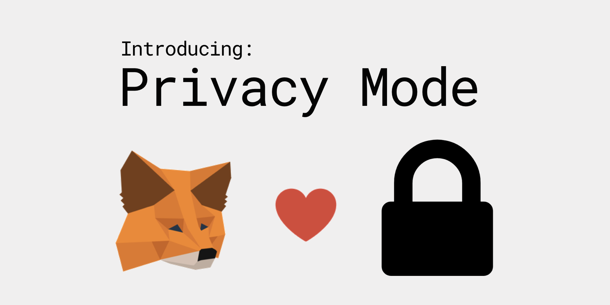
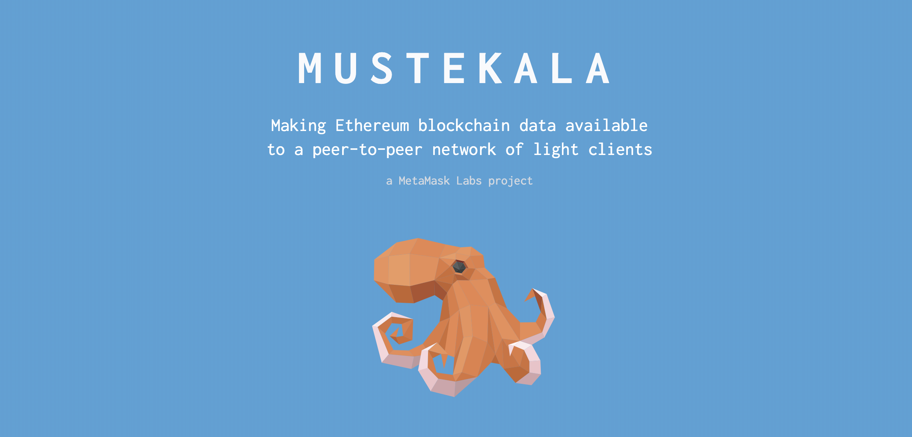
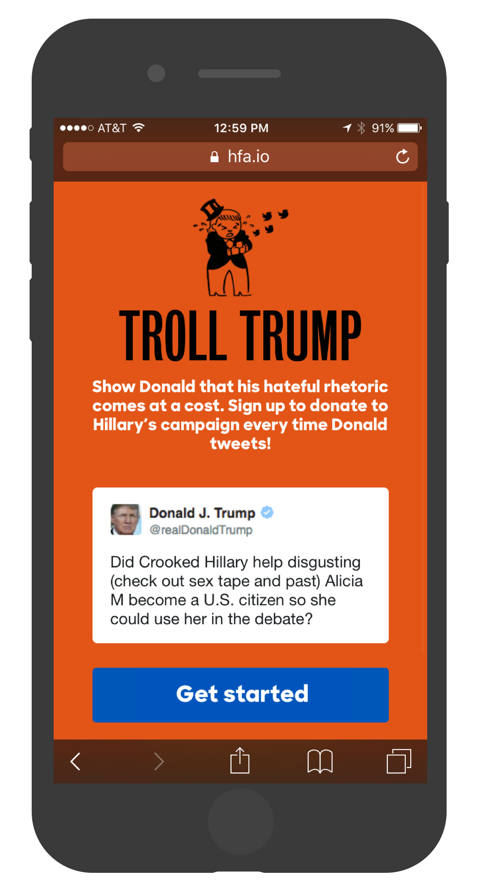
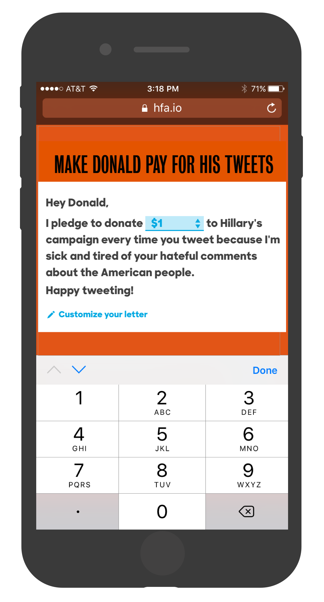
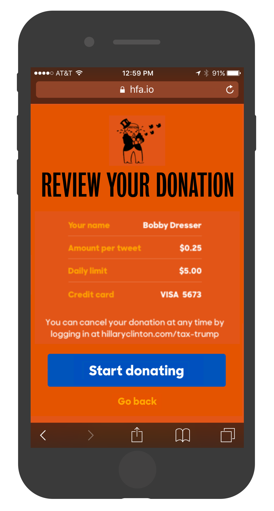
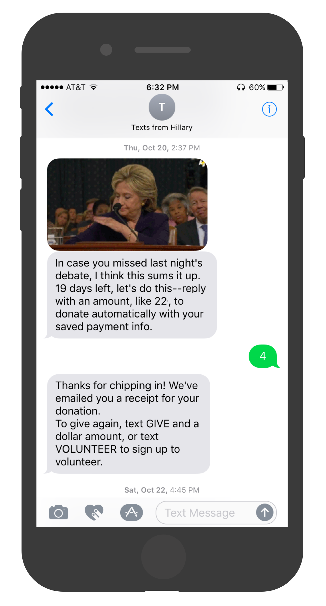
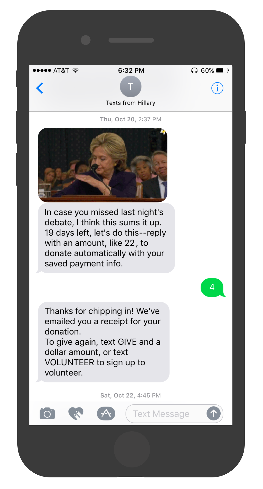

A Privacy Standard for Ethereum — 1/10/2019
As part of my work on MetaMask, I helped design and launch out an industry-wide standard to improve
Ethereum's privacy layer. Rather than having dapp browsers (like MetaMask) expose your Ethereum addresses to every site you visit,
the standard defines an interaction pattern where sites request access to user data.
The standard (EIP 1102)
was a fundamental change in the way applications & users interact, and caused a breaking change for
every Ethereum application in production. Accordingly, it was carefully designed and implemented in
cooperation with teams at Status, Mist, Coinbase, imToken, and developers across the Ethereum community.
Read my writeup on Medium, or read more about how & why we built it.
MetaMask on the DevCon Mainstage — 11/15/2018
I had the privilege of speaking on behalf of MetaMask at DevCon 2018, the year’s biggest
Ethereum developer conference. I recapped the past year of MetaMask’s development,
the growth of our team & community, and some of our work to
improve the usability and privacy of Ethereum.
I'm joined on stage by Jenny Pollack and Bruno Barbieri,
two of my awesome teammates. Check out our talk below, or
read the writeup on Medium.
Mustekala, an Ethereum light client — 10/30/2018
Most Ethereum applications interact with the blockchain via hosted node providers like
Infura or Alchemy. These services run at scale and expose the standard Ethereum JSON-RPC API for wallets
or decentralized apps to use. This trend, while convenient, could re-centralize access to blockchain data.
At MetaMask, I managed a research team that explored using libp2p to make Ethereum data available
as lightweight, content-addressed elements. Our goal was to make this data available via MetaMask instances, creating a
mesh network that reduced reliance on hosted nodes.
This project has been discontinued – if you are interested in picking up the research prototype, get in touch!

Stellar.org Wallets — 9/10/2017
Stellar is a decentralized protocol that allows people to send money internationally for free.
It promotes low-cost financial access across the world, particularly to individuals in
developing nations.
The Stellar protocol is built and maintained by a non-profit called Stellar Development Foundation.
As with many blockchain-based payment networks, the Stellar protocol is simply the backbone on which developers are able to
build applications for widespread use.
I helped SDF design and build a simple page to showcase wallets developed by members of their community.
The page does two things: it provides a simple on-ramp for folks interested in holding Lumens,
and it gives a sample of the community’s involvement.
Built with: vanilla JS, WordPress
Troll Trump — 10/12/2016
While at Hillary for America, I managed the design, development, and public rollout of Troll Trump, a fundraising site that let users create an automatic donation to Hillary's campaign each time Trump posted on Twitter. The site raised $250,000 in three weeks.
Built with: React, Nuclear JS / Flux, DynamoDB, Amazon SQS, Stripe
Press: CNN Money, Mashable, GOOD, USNews, DailyDot, CNet, Adweek
  hillaryclinton.com/donate — 10/15/15
I led optimization and feature development for the Clinton campaign’s online donation platform. We ran
dozens of multivariate experiments to maximize revenue, testing everything from small visual tweaks to large functional redesigns.
This data-first approach let us understand how donor behavior differs across traffic sources and
kept our allocation of development time closely tied to the product’s key success metrics.
Our team also invested heavily in performance, eventually scrapping our isomorphic React / Flux stack
in favor of a custom vanilla JS framework built in-house.
The platform we built raised money from over 3 million individual donors,
grew a pool of 1.2 million account holders with saved payment info, and raised hundreds of millions of dollars.
Built with: React, Nuclear JS / Flux, Django, Stripe
Built by: Cheston L, Beth A-B, Vanessa A, Nathan K, Deepa S, Matt T, Akash G, Horace W
Zipper, an SMS fundraising tool — 8/1/2016
At Hillary for America, we grew a robust SMS program that the campaign used for GOTV, volunteer recruitment, fundraising, and much more.
My team built a backend service and data pipeline to let users donate to the campaign by just texting a dollar amount. This
development and success of this product was the result of broad collaboration across the fundraising, legal, and digital organizing teams.
The feature was available to the 1.2 million users with saved payment information on hillaryclinton.com.
When a user completed a donation on our web flow, we asked if they wanted to save their payment info and join our SMS program. This
allowed us to securely link a phone number on our SMS list to an account on our website and a payment token with Stripe. During key
fundraising moments, we could text this eligible audience and prompt them to donate immediately.
We ran several tests to optimize the wording and timing of these SMS "quick donate" asks. This feature alone raised over $1.5 million
dollars in the last stretch of the campaign.
 

Uber Trek— 1/21/2015
As a product case study, I came up with a new product for Uber that allows users to schedule rides in advance. I describe why the product makes sense, outline how it should work and look, and discuss what it could mean for Uber.
Update: it's now 2016 and clearly the folks at Uber had the same idea because this now exists in the app :)
Built with: Photoshop, imagination
View the project: Uber Trek
3Derm — 11/15/2014
3Derm is a Boston-based startup dedicated to improving the detection skin cancer in its earliest stages. The company uses a custom-built 3D imaging device for easy and affordable screening. I helped design and build the front-end of an online portal for patients and doctors.
Built with: MongoDB, Node JS, Angular JS, Boostrap, SASS
View the project: 3derm.com